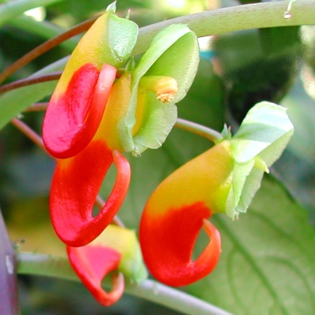
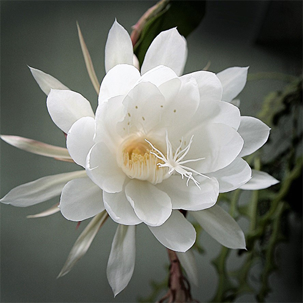
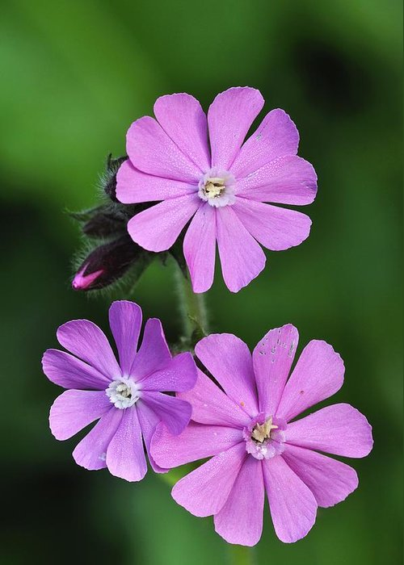
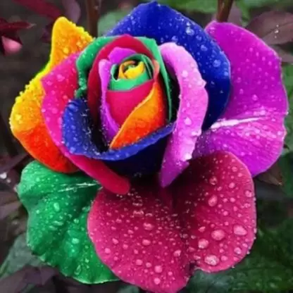

Rare Flowers In World
Rafflesia Arnoldii(Corpse Lilly)

Rafflesia which is also called Corpse Lilly is a genus of parasitic flowering plants in the family Rafflesiaceae. The species have enormous flowers, the buds rising from the ground or directly from the lower stems of their host plants; one species has the largest flowers in the world.
Ghost Orchid

What is a ghost orchid, and where do ghost orchids grow? This rare orchid, Dendrophylax lindenii, is found primarily in humid, marshy areas of Cuba, the Bahamas and Florida. Ghost orchid plants are also known as white frog orchids, thanks to the frog-like shape of the odd-looking ghost orchid flowers.
Parrot's Beak
Lotus berthelotii or parrot's beak is known for its ornamental lobster-claw like flowers, which also look like parrot's beak. It makes for an adorable display of silver-gray leaves and contrasting shades of bright yellow, orange and red flowers.
Kadpul Flower
In Sri Lanka, Kadapul is considered to be the legendary flower, associated with Nagas. It is said to be a flower descended from heavens, and when it blooms, it is believed that Nagas come on Earth from their heavenly abodes to pay homage with it to Lord Buddha, who is meditating on the holy mountains of Sri Pada.
Sea Poison Tree

The leaves are narrow obovate, 20–40 cm long and 10–20 cm broad. The young leaves are a beautiful bronze with pinkish veins. Old leaves turn yellowish. The flowers are delightful puff balls of white stamens tipped with pink.
Campion
campion, (genus Silene), also called catchfly, genus of about 900 species of herbaceous flowering plants of the pink, or carnation, family (Caryophyllaceae). Campions are distributed throughout the world, and several are ornamental rock-garden or border plants.
Saheli(Rainbow Rose)
The rainbow rose is a rose that has had its petals artificially colored. The method exploits the rose natural processes by which water is drawn up the stem. By splitting the stem and dipping each part in different colored water, the colors are drawn into the petals resulting in a multicolored rose. With these changes to the rose, it causes them to not live as long as an uncolored rose.